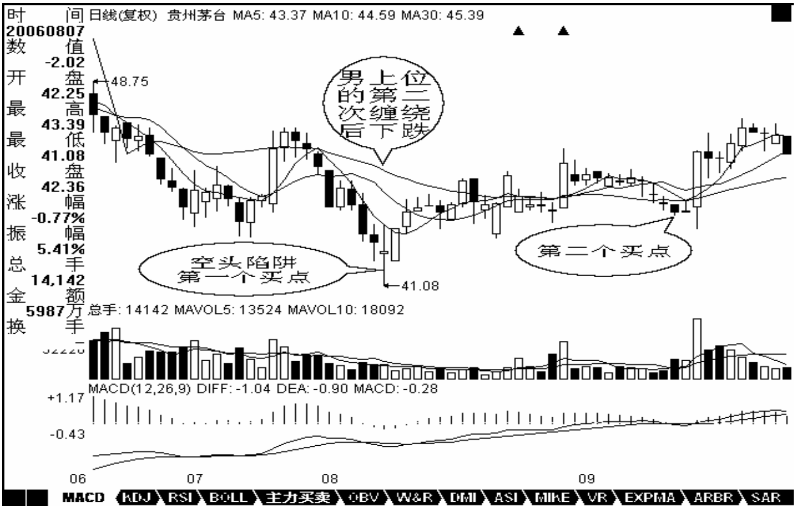
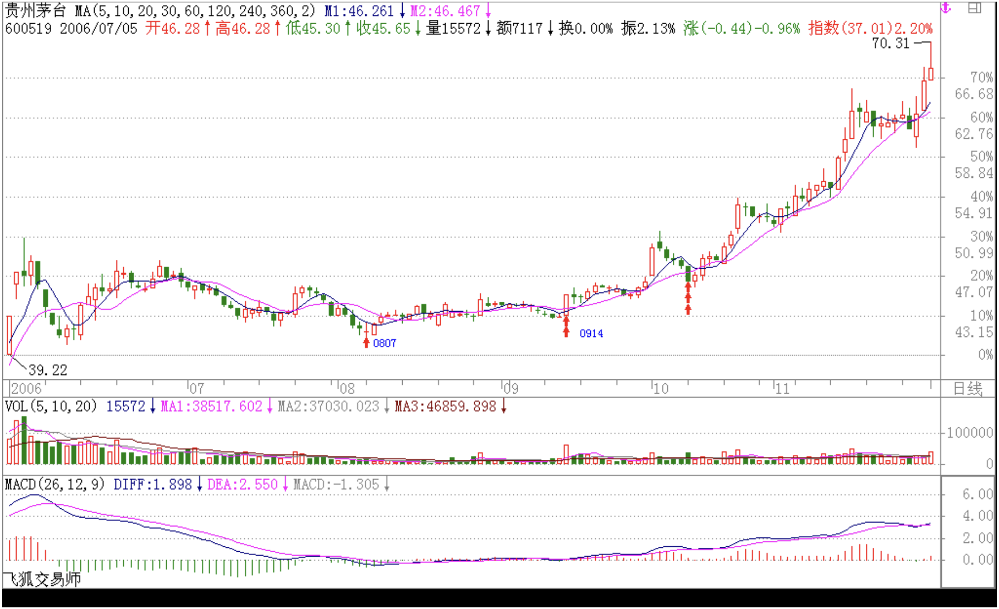
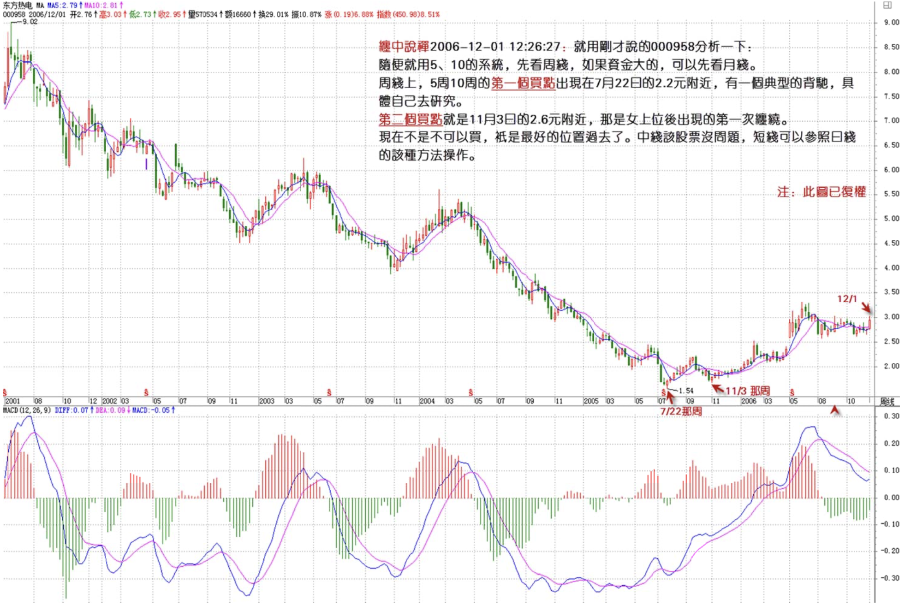

教你炒股票12：一吻何能消魂？
2006/12/1 12:03:48
就算是看AV，最终也是为了实战。上章说了那么多关于“吻”的知识，目的是为了干而不看，光看不干，那不成了阴九幽？AV看多了而不实践，绝对有损健康。但干，马上要遇到的就是风险问题。任何一个位置介入，都存在风险，而且除非行情走出来了，否则即使最简单的均线系统，也没人能事先百分百地确认究竟采取怎样的方式去“吻”。熟悉本ID所解《论语》的都知道，风险是“不患”的，是无位次的，任何妄求在投资中的绝对无风险，都是痴心妄想。唯一的办法，就是设置一个系统，使得无位次、“不患”的风险在该系统中成为有位次，“患”的系统，这是长期战胜市场的唯一方法。
必须根本自己的实际情况，例如资金、操作水平等等，设置一套分类评价系统，然后根据该系统，对所有可能的情况都设置一套相应的应对程序，这样，一切的风险都以一种可操作的方式被操作了。而操作者唯一要干的事情，就是一旦出现相应的情况，采取相应的操作。对于股票来说，实际的操作无非三种：买、卖、持有。当然，在实际中，还有一个量的问题，这和资金管理有关，暂且不考虑。那么，任何投资操作，都演化成这样一个简单的数学问题：N种完全分类的风险情况，对应三种（买、卖、持有）操作的选择。
例如，对于一个简单的，由5日均线与10日均线构成的买卖系统，首先，两者的体位构成一个完全分类，女上位是牛，男上位是熊，还有一种是互相缠绕的情况，这种情况最终都要演化成女上位或男上位，只有两种性质：中继或转折。相应，一个最简单的操作系统就此产生，就是在体位互相缠绕完成后介入，对于多头来说，这样一个系统无非面临两个结果，变为女上位成功，变为男上位失败。由于缠绕若是中继就延续原体位，若转折就改变体位，因此对多头来说，值得介入的只有两种情况：男上位转折，女上位中继，空头反之。
对于任种走势，首要判断的是体位：男上位还是女上位。这问题只要有眼睛的都能判断出来，对于5日、10日的均线系统来说，5日在上就是女上位，反之就是男上位，这在任何情况下都是明确的。如果是女上位的情况，一旦出现缠绕，唯一需要应付的就是这缠绕究竟是中继还是转折。可以肯定地说，没有任何方法可以百分百确定该问题，但还是有很多方法使得判断的准确率足够高。例如，女上位趋势出现的第一次缠绕是中继的可能性极大，如果是第三、四次出现，这个缠绕是转折的可能性就会加大；还有，出现第一次缠绕前，5日线的走势必须是十分有力的，不能是疲软的玩意，这样缠绕极大可能是中继，其后至少会有一次上升的过程出现；第三，缠绕出现前的成交量不能放得过大，一旦过大，骗线出现的几率就会大大增加，如果量突然放太大而又萎缩过快，一般即使没有骗线，缠绕的时间也会增加，而且成交量也会现在两次收缩的情况。
女上位选择第一次出现缠绕的中继情况，而男上位的就相反，要寻找最后一次缠绕的转折情况，其后如果出现急跌却背弛，那是最佳的买入时机。抄底不是不可以，但只能选择这种情况。然而，没有人百分百确认那是最后一次缠绕，一般，男上位后的第一次缠绕肯定不是，从第二次开始都有可能，如何判断，最有力的就是利用好背弛制造的空头陷阱。关于如何利用背弛，是一个专门的话题，以后会详细论述。
综合上述，利用均线构成的买卖系统，首先要利用男上位最后一次缠绕后背弛构成的空头陷阱抄底进入，这是第一个值得买入的位置，而第二个值得买入或加码的位置，就是女上位后第一次缠绕形成的低位。站在该系统下，这两个买点的风险是最小的，准确地说，收益和风险之比是最大的，也是唯一值得买入的两个点。但必须指出的，并不是说这两个买点一定没有风险，其风险在于：对于第一个买点，把中继判断为转折，把背弛判断错了；对于第二个买点，把转折判断成中继。这些都构成其风险，但这里的风险很大程度和操作的熟练度有关，对于高手来说，判断的准确率要高多了，而如何成为高手，关键一点还是要多干、看参与，形成一种直觉。但无论高手还是低手，买点的原则是不变的，唯一能高低的地方只是这个中继和转折以及背弛的判断。
明白了这一点，任何不在这两个买点买入的行为都是不可以原谅的，因为这是原则的错误，而不是高低的区别，如果你选择了这个买卖系统，就一定要按照这个原则了。买的方式明白了，卖就反过来就可以了，这是十分简单的。一吻而消魂，学会这消魂之吻，就能在动荡的市场中找到一个坚实的基础。当然，相应的均线的参数可以根本资金量等情况给予调节，资金量越大，参数也相应越大，这要自己去好好摸索了。这点，对于短线依然有效，只是把日线改为分钟线就可以了。而一旦买入，就一直持有等待第一个卖点，也就是女上位缠绕后出现背弛以及第二个卖点也就是变成男上位的第一个缠绕高点把东西卖了，这样就完成一个完整的操作。
注意，买的时候一般最好在第二个买点，而卖尽量在第一个卖点，这是买和卖不同的地方。
补充一个例子让不习惯抽象的人能理解：
对于喜欢用日线的，用茅台为例子给一个分析，5日和10日。
8月7日，男上位的第二次缠绕后下跌，但成交量等都明显出现背弛，构成小的空头陷阱，成为第一个买点在41元附近。
9月14日，女上位的第一次缠绕下跌形成第二个买点在44元附近。
然后基本就沿着10日线一直上涨，即使是短线，10日线不有效跌破就继续持有等待第一个卖点，也就是缠绕后出现背弛的出现。第二个卖点就是变成男上位的第一个缠绕的高点，目前这一切都没出现，所以就持有等待出现。


再补充一句：
希望来这里的人，以后慢慢少点诸如要涨多少要跌多少之类的问题，因为这类问题都是错误的思维下产生的。本ID不是股评，不是算命先生，才没兴趣猜测上升、下跌的空间，本ID只是一个观察者，只在买点出现时介入，然后持有等待卖点的出现，其他本ID一律没兴趣。
来这里，如果最终不能脱胎换骨，在投资上换一副眼睛，那你就白来了。
回复
缠中说禅 2006/12/1 12:09:33
这个对下午判断继续有效
缠中说禅
2006-12-01 09:13:03
大盘今天出现震荡是正常的，关键是5日线。只要5日线站稳，板块会继续轮动表现的
缠中说禅 2006/12/1 12:10:55
本ID对大盘的建议继续有效，引用如下：
该结论继续有效
缠中说禅
2006-11-29 15:14:38
从大盘健康的角度说，本ID给大盘的建议是：先深成指突破6103点的历史高位，然后上海跟上，突破以后再调整，这样更健康。不知道大盘有没有兴趣听本ID的意见了。
缠中说禅 2006/12/1 12:16:49
现在大盘最大的风险是上海人比较小气，因为深圳先突破历史新高几乎是不可改变的了。上海有可能故意捣乱，让大家都突破不了。这种事情听起来像天方夜谈，但历史上出现过不止一次了。但历史却一次次地证明，只要是大牛市，深圳就是比上海牛，这也是判断行情的一个很重要的经验。当深圳比上海弱时，是大行情的机会很小的。现在看到深圳比上海强，即使是上海人，也应该为此高兴。
缠中说禅 2006/12/1 12:18:15
[匿名] 糊涂蛋
2006-12-01 12:09:07
沙发？
请教000958能介入吗？
===========
学好上面一招，就要自己先分析一下，你看看用5日、10日，这股的最佳和第二买点在哪里？
缠中说禅 2006/12/1 12:26:27
好的，就用刚才“糊涂蛋”所问的000958分析一下。
随便就用5、10的系统，先看周线，如果资金大的，可以先看月线。
周线上，5周10周的第一个买点出现在7月22日的2.2元附近，有一个典型的背弛，具体自己去研究。
第二个买点就是11月3日的2.6元附近，那是女上位后出现的第一次缠绕。
现在不是不可以买，只是最好的位置过去了。中线给股票没问题，短线可以参照日线的该种方法操作。

缠中说禅 2006/12/1 12:30:55
各位注意
本ID告诉你的是最佳买点如何判断，并不是说除了这两个点就不能买，但那要承受更大的风险，而要长期成功，就要尽量学会把风险控制到最低。
还有，这只是一招，绝不能光靠这一招，但如果连一招都学不会，后面那些招怎么学？
缠中说禅 2006/12/1 12:33:53
[匿名] 7NT开叫
2006-12-01 12:23:47
楼主既牛又菩萨心肠，谢谢了，什么时候楼主有空时请楼主写一篇关于资金管理的文章，谢谢！
============
按部就班，会写到的。
缠中说禅 2006/12/1 12:41:24
对于喜欢用日线的，用茅台为例子给一个分析，5日和10日。
8月7日，男上位的第二次缠绕后下跌，但成交量等都明显出现背弛，构成小的空头陷阱，成为第一个买点在41元附近。
9月14日，女上位的第一次缠绕下跌形成第二个买点在44元附近。
然后基本就沿着10日线一直上涨，即使是短线，10日线不有效跌破就继续持有等待第一个卖点，也就是缠绕后出现背弛的出现。第二个卖点就是变成男上位的第一个缠绕的高点。
缠中说禅 2006/12/1 12:50:57
[匿名] 糊涂蛋
2006-12-01 12:44:59
非常感谢数女在百忙之中天天按时教我们吻、缠绕、介入、体位、G点，现有三个疑问请数女解答：
1、如果招数所有人都学会了，市场会变成怎样呢？（也许糊涂蛋从来都不缺乏）。
2、你天天按时授课是抱着怎样的目的？
3、我们该怎样感谢你呢？
==============
首先不会所有人都学会，其次，市场最后比的不是技术，而是心态，这永远不可能统一，高手永远是高手，低手，如果不经过磨练，学多少技术也白搭。
你的第二个问题很无聊，干事情为什么都要目的，事情本身不可以就是目的？
至于感谢，说一句狠话，世界上有谁有能力感谢本ID的？本ID什么都不缺，谁又有资格感谢本ID？
缠中说禅 2006/12/1 12:52:19
[匿名] 7NT开叫
2006-12-01 12:47:35
非常认同楼主的安全原则和均线操作法，楼主所讲绝对是真经，非常实用，谢谢！
===========
那只是一个指南，路必须自己走，多看点AV，也就是各种股票的走势图，好好分析，要心里完全明了，化为自己的直觉，这才有点用处。
缠中说禅 2006/12/1 12:55:32
[匿名] 无言
2006-12-01 12:51:26
你好，今天买入600809，后市空间有多大，谢谢
==========
希望来这里的人，以后慢慢少点问这类的问题，因为这类问题都是错误的思维下产生的。本ID不是股评，不是算命先生，才没兴趣猜测上升、下跌的空间，本ID只是一个观察者，只在买点出现时介入，然后持有等待卖点的出现，其他本ID一律没兴趣。
来这里，如果最终不能脱胎换骨，在投资上换一副眼睛，那你就白来了。
缠中说禅 2006/12/1 12:58:59
文章最后补充了几句话，各位可以再看看。
开盘了，先下。再见。
缠中说禅 2006/12/1 15:02:23
大盘今天如期出现震荡，目前大盘最大的危险就是前面所说的沪深之间的竞争，特别上海历史上有故意拆台的前科，这一点必须有所警惕。
技术上，今天深圳成指留下的缺口十分重要，如果很快回补，则技术上发出不好的信号。
下周一依然有震荡的需要，但个股行情依然继续。由于11月是巨阳，12月上冲后出现大幅震荡不可避免，这必须要清醒。
缠中说禅 2006/12/1 15:03:44
[匿名] liang
============
把基本面当上帝和把技术当上帝一样可笑。
缠中说禅 2006/12/1 15:04:13
马上有应酬，要走了，先下，再见。